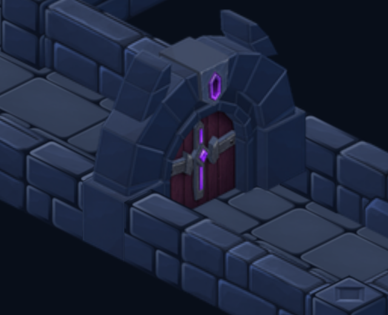
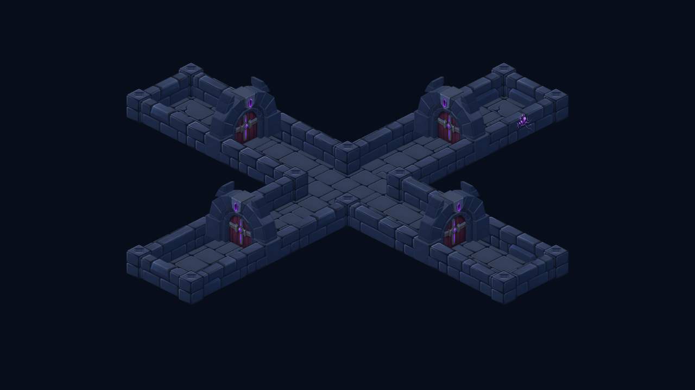

Sceau interdit — pierre et raccords repris
La pierre emploie maintenant la même texture et les mêmes profils de couleur que les murs. Le bas des montants forme des blocs pleins, alignés sur la largeur et la hauteur de la maçonnerie.


Captures Godot agrandies pour examiner les jonctions. Le bois prune et les ferrures conservent la peinture précédente ; seule la pierre et la base de maçonnerie ont changé.

Les quatre orientations ont été inspectées. La suppression puis la remise des portes suppriment et rétablissent leurs raccords. Atlas : 9 Mio RGBA, inchangé ; 128 autres régions conservent leurs pixels et métadonnées. Aucun test sur téléphone ou profil de performances.
Source ImageGen conservée et prompt · Projection et découpe · Intégrité des atlas